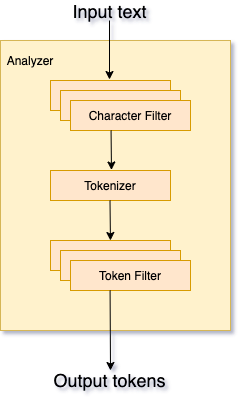

Elasticsearch 入门

ElasticSearch 是基于 Apache Lucene 的分布式搜索和分析引擎，为所有类型的数据提供近乎实时的搜索和分析。
什么是 Elasticsearch？
数据输入：文档和索引
Elasticsearch 是一个分布式文档存储搜索引擎。Elasticsearch 不会将信息存储为列数据的行，而是存储已序列化为 JSON 文档的复杂数据结构。当集群中有多个 Elasticsearch 节点时，存储的文档会分布在整个集群中，并且可以从任何节点立即访问。
存储文档后，将在 1 秒钟内几乎实时地对其进行索引并可搜索。为了使文本可搜索，传统数据库每个字段存储一个值的方式不足以进行全文搜索。文本字段中的每个单词都需要可搜索，这意味着数据库需要能够在单个字段中索引多个值（在本例中为单词）。最能支持单字段多值要求的数据结构是倒排索引（inverted index），该结构支持非常快速的全文本搜索。倒排索引列出了出现在任何文档中的每个唯一值，或者词项/单词（term），并标识了每个单词出现的所有文档。
**索引（Index）**可以认为是文档的优化集合，每个文档都是字段 (field) 的集合，这些字段是包含数据的键值对。默认情况下，Elasticsearch 对每个字段中的所有数据建立索引，并且每个索引字段都具有专用的优化数据结构。例如，文本字段存储在倒排索引中，数字字段和地理字段存储在 BKD 树中。使用按字段数据结构组合并返回搜索结果的能力使 Elasticsearch 如此之快。
Elasticsearch 还具有无模式的能力，这意味着无需显式指定如何处理文档中可能出现的每个不同字段即可对文档建立索引。启用动态映射后，Elasticsearch 自动检测并向索引添加新字段。这种默认行为使索引和浏览数据变得容易-只需开始建立索引文档，Elasticsearch 就会检测布尔值，浮点数和整数值，日期和字符串并将其映射到适当的 Elasticsearch 数据类型。
但是，最终，您比 Elasticsearch 更了解您的数据以及如何使用它们。您可以定义规则来控制动态映射，也可以显式定义映射以完全控制字段的存储和索引方式。
定义自己的映射使您能够：
- 区分全文字符串字段和精确值字符串字段
- 执行特定于语言的文本分析
- 优化字段以进行部分匹配
- 使用自定义日期格式
- 使用无法自动检测到的数据类型，例如
geo_point和geo_shape
为不同的目的以不同的方式对同一字段建立索引通常很有用。例如，您可能希望将一个字符串字段索引为全文搜索的文本字段和索引关键字，以便对数据进行排序或汇总(定义映射时对字段使用 fields 定义额外的类型)。或者，您可能选择使用多个语言分析器来处理包含用户输入的字符串字段的内容。
数据输出：搜索和分析
尽管您可以将 Elasticsearch 用作文档存储并检索文档及其元数据，但真正的强大之处在于能够轻松访问基于 Apache Lucene 搜索引擎库构建的全套搜索功能。
Elasticsearch 提供了一个简单、一致的 REST API，用于管理您的集群以及索引和搜索数据。为了进行测试，您可以轻松地直接从命令行或通过 Kibana 中的开发者控制台提交请求。在您的应用程序中，您可以为您选择的语言使用 Elasticsearch客户端 ：Java，JavaScript，Go，.NET，PHP，Perl，Python 或 Ruby。
搜索数据
Elasticsearch REST API 支持结构化查询，全文查询和结合了两者的复杂查询。结构化查询类似于您可以在 SQL 中构造的查询类型。例如，您可以搜索索引中的 gender 和 age 字段，employee 然后按 hire_date 字段对匹配项进行排序。全文查询会找到所有与查询字符串匹配的文档，并按相关性对它们进行返回（它们与您的搜索词的匹配程度如何）。
除了搜索单个词项（term）外，您还可以执行短语搜索（phrase searches），相似性搜索（similarity searches）和前缀搜索（prefix searches），并获得自动完成建议。
是否要搜索地理空间或其他数字数据？Elasticsearch 在支持高性能地理和数字查询的优化数据结构中索引非文本数据。
您可以使用 Elasticsearch 全面的 JSON 样式查询语言（Query DSL）访问所有这些搜索功能。您还可以构造 SQL样式的查询 以在 Elasticsearch 内部本地搜索和聚合数据，并且 JDBC 和 ODBC 驱动程序使范围广泛的第三方应用程序可以通过 SQL 与 Elasticsearch 进行交互。
可扩展性和弹性：集群、节点和分片
Elasticsearch 旨在始终可用并根据您的需求进行扩展。它通过自然分布来做到这一点。您可以将**服务器（节点 - node）添加到集群（Cluster）**以增加容量，Elasticsearch 会自动在所有可用节点之间分配您的数据和负载查询。无需大修您的应用程序，Elasticsearch 知道如何平衡多节点集群以提供可扩展性和高可用性。节点越多，能力越大。
这是如何运作的？在幕后，Elasticsearch 索引实际上只是一个或多个物理**分片（Shard）**的逻辑分组，其中每个分片实际上是一个独立的索引，它是一个 Lucene 索引的实例。通过将索引中的文档分布在多个分片中，并将这些分片分布在多个节点上，Elasticsearch 可以确保冗余，这既可以防止硬件故障，又可以在将节点添加到集群时增加查询能力。随着集群的增大（或缩小），Elasticsearch 会自动迁移分片以重新平衡集群。
当数据写入分片时，它会定期发布到磁盘上新的不可变 Lucene 片段（Segement）中，此时它可以用于查询。这称为刷新（refresh）。提交（Commiting）一个新的片段到磁盘需要一个 fsync 来确保片段被物理性地写入磁盘，这样在断电的时候就不会丢失数据。 但是 fsync 操作代价很大；如果每次索引一个文档都去执行一次的话会造成很大的性能问题。Elasticsearch 使用介于内存和磁盘之间的**文件系统缓存（Page Cache）来临时部分存储提交，并在合适的时间将其冲刷（flush）**到磁盘。并增加了一个 translog ，或者叫事务日志，在每一次对 Elasticsearch 进行操作时均进行了日志记录，以防在完整提交之前丢失数据。 Elasticsearch：权威指南中更详细地描述了它的工作原理。
随着片段数量的增加，这些片段会定期合并为更大的片段的过程称为合并（merge）。由于所有片段都是不可变的，这意味着使用的磁盘空间通常会在索引期间波动，因为在删除用来替换它们的片段之前需要先创建新的合并段。合并可能会占用大量资源，尤其是在磁盘 I/O 方面。
有两种类型的分片：主分片和副本。索引中的每个文档都属于一个主分片。副本分片是主分片的副本。副本提供数据的冗余副本，以防止硬件故障并增加处理读取请求（如搜索或检索文档）的能力。
索引中的主分片数量在创建索引时是固定的，但副本分片的数量可以随时更改，而不会中断索引或查询操作。
分片是 Elasticsearch 在集群范围分布数据的单位。 Elasticsearch 在重新平衡数据时，例如发生故障后，其移动分片的速度，将取决于分片的大小和数量以及网络和磁盘性能。
分析数据
文本分析是将非结构化文本（例如电子邮件的正文或产品说明）转换为针对搜索优化的结构化格式的过程。当索引或搜索文本（text）字段类型时，Elasticsearch 执行文本分析，然后将其添加到倒排索引中以便进行搜索。
Elasticsearch 对每个分析的文本字段都要经过许多步骤，用来归一化和规范化次元，该过程由 分析器（analyzer） 执行，经历以下步骤：
-
字符过滤 — 使用字符过滤器（
Character filters）转换或过滤字符，单词过滤器有零个或多个，按顺序处理。 -
分词 — 使用分词器（
Tokenizer）将文本分成一个或多个词元（token），将这些令牌存储到索引中。 -
词元过滤 — 词元过滤器（
Token filters）接收词元流，并可以添加，删除或更改词元。例如，小写（lowercase）词元过滤器会将所有词元转换为小写，停顿词（stop）元过滤器会从词元流中删除常见的词（停顿词），同义词（synonym）词元过滤器将同义词引入词元流，可以有零个或多个，按顺序处理。 -
词元索引 — 将这些词元存储到倒排索引中。

倒排索引
倒排索引的结构，允许非常快速的全文搜索。倒排索引由出现在任何文档中的所有唯一词的列表以及每个词出现的文档列表组成。
例如，假设我们有两个文档，每个文档都有一个包含以下内容的内容字段：
- The quick brown fox jumped over the lazy dog
- Quick brown foxes leap over lazy dogs in summer
要创建倒排索引，我们首先将每个文档的内容字段拆分为单独的单词（我们称之为词项-term 或词元-token），经过上面的文本分析归一化处理，创建得到所有唯一词元的排序列表，然后列出每个词项出现在哪个文档中。结果可能如下所示：
1 | Term Doc_1 Doc_2 |
现在，如果我们想搜索 quick brown，我们只需要找到每个词出现的文档：
1 | Term Doc_1 Doc_2 |
两个文档都匹配，但第一个文档比第二个文档有更多的匹配。如果我们应用一个简单的相似度算法，只计算匹配项的数量，那么我们可以说第一个文档比第二个文档更匹配——与我们的查询更相关 - relevant。